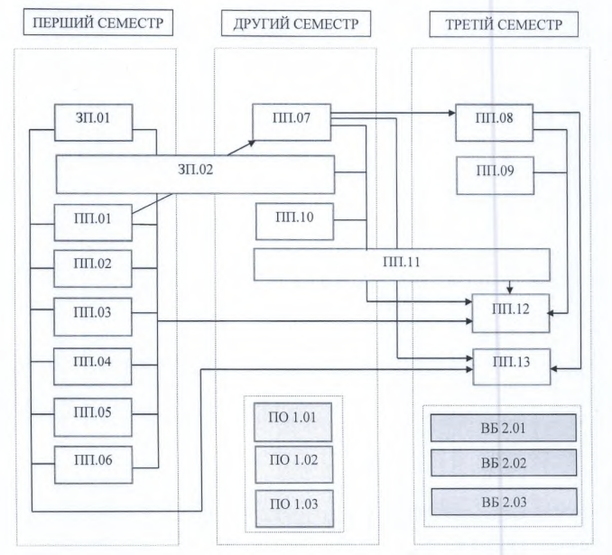

Рівень вищої освіти: магістр
Галузь знань: D - Бізнес, адміністрування та право
Спеціальність: D4 - Публічне управління та адміністрування
Виконав: студент групи _________ П.І.Б.
Метою програми є підготовка фахівців у сфері публічного управління, здатних ефективно працювати в державних та громадських структурах.


